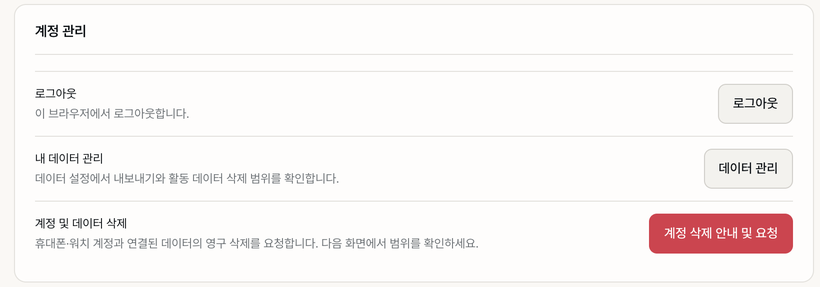
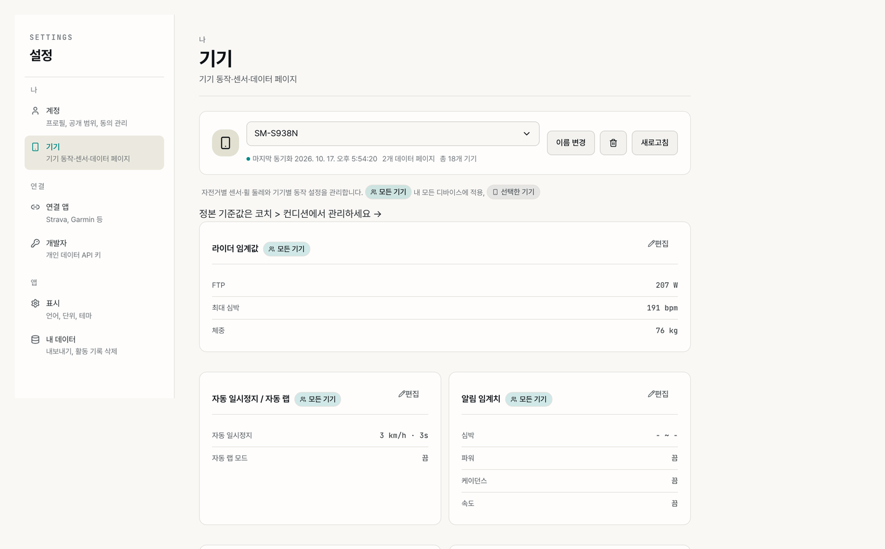
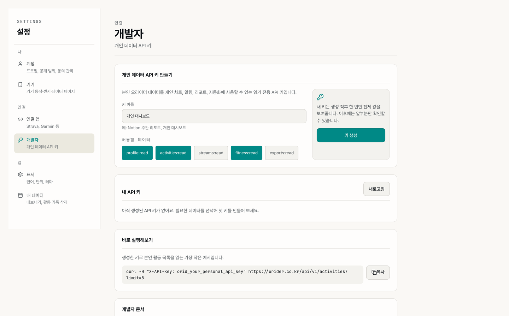
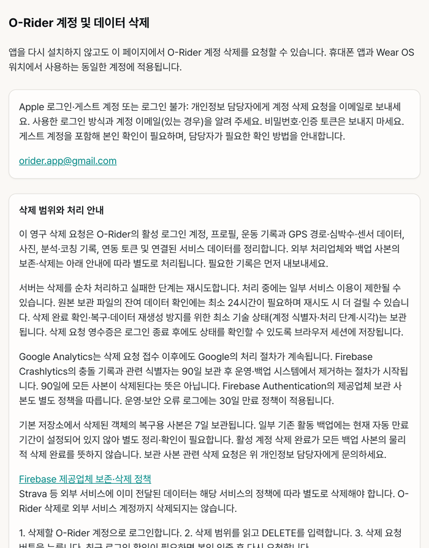

10. 설정
이 장에서 할 수 있는 것
- 프로필과 새 활동의 기본 공개 범위를 정하고, 동의 상태를 확인합니다.
- 휴대폰 앱의 기기 설정과 자전거·장비를 웹에서 관리합니다.
- 개인 데이터 API 키를 만들고, 데이터를 내려받거나 지우고, 계정 삭제를 요청합니다.
10.0 설정 화면 구조
오른쪽 위 톱니바퀴를 누르면 설정이 열립니다. 왼쪽 목록이 세 묶음으로 나뉩니다.
| 묶음 | 항목 | 안에 있는 것 |
|---|---|---|
| 나 | 계정 | 프로필, 공개 범위, 동의 관리 (10.1) |
| 기기 | 기기 동작 · 센서 · 데이터 페이지 (10.2) | |
| 연결 | 연결 앱 | Strava, Garmin 등 (10.4, 9장) |
| 개발자 | 개인 데이터 API 키 (10.5) | |
| 앱 | 표시 | 언어, 단위, 테마 (10.6) |
| 내 데이터 | 내보내기, 활동 기록 삭제 (10.7) |
10.1 계정 — 프로필 · 공개 범위 · 동의

프로필
| 항목 | 방법 |
|---|---|
| 이름 | 이름 옆 변경을 누릅니다. 피드·순위표·댓글 등 모든 곳에 반영됩니다. |
| 친구 코드 | 코드 복사로 복사해 친구에게 보냅니다(5.6). |
| 사진 | 사진 변경으로 올립니다. |
| 자기소개 | 칸에 쓰고 다른 곳을 누르면 저장됩니다. |
공개 범위 — 따라 하기
- 새 활동의 기본값에서 모두에게 공개 · 친구에게만 · 비공개 중 하나를 고릅니다.
- 지금까지의 활동도 같은 범위로 바꾸려면 기존 활동에도 적용을 누릅니다. 대상 건수를 먼저 보여 주고 확인을 받습니다.
- 아래 스위치로 공개 프로필(다른 라이더가 검색하고 볼 수 있음), 리더보드 참여(세그먼트 순위표에 내 기록 표시), 친구 요청 허용을 정합니다.
공개 범위 이름 대응표
공개 범위는 화면마다 이름이 조금씩 다르지만 모두 같은 3단계입니다.
| 단계 | 화면에 보이는 이름 | 누가 보나 |
|---|---|---|
| 전체 공개 | 모두에게 공개 · 전체 공개 · 전체 · 전체공개 | 모든 사용자 (세그먼트 순위표에도 들어갈 수 있음) |
| 친구 | 친구에게만 · 친구 · 팔로워만 · 친구만 | 친구로 맺은 사람만 ('팔로워만'도 친구 공개와 같습니다) |
| 비공개 | 비공개 | 나만 |
이름이 쓰인 곳: 웹 설정 > 계정 "모두에게 공개/친구에게만/비공개", 웹 활동 편집 "전체 공개/팔로워만/비공개", 웹 활동 ⋯ 메뉴 "전체 공개/친구/비공개", 웹 업로드 창 "전체/친구/비공개", 앱 "전체공개/친구만/비공개"
공개 범위는 활동마다 하나입니다. 심박·파워 같은 지표만 골라 숨기는 기능은 없습니다. 특정 활동만 다르게 하려면 그 활동의 ⋯ 메뉴나 활동 편집에서 바꿉니다(3.8).
기존 활동에도 적용은 활동마다 따로 정해 둔 공개 범위까지 모두 바꿉니다.
그 밖의 카드
- 의료·긴급 연락처 (선택) — 혈액형, 복용약, 알레르기와 긴급 연락처. 응급 시 구조대에 공유될 수 있습니다.
- AI 코치 데이터 처리 — AI 코치가 답을 만들 때 필요한 개인 운동 데이터를 외부 AI 처리자에게 보내는 데 대한 동의 상태(동의함 · 동의 안 함 · 재동의 필요). 대화 내역 관리로 코치 > 대화에 갑니다.
- 계정 관리 — 로그아웃, 내 데이터 관리의 데이터 관리(10.7로 이동), 계정 및 데이터 삭제의 계정 삭제 안내 및 요청(10.8)
10.2 기기 — 휴대폰 앱 설정을 웹에서

- 설정 > 기기를 엽니다. 맨 위 목록에서 기기(예: 휴대폰 모델명)를 고릅니다. 마지막 동기화 시각과 기기 수가 보입니다.
- 카드마다 편집을 눌러 값을 바꿉니다. 카드 제목 옆 모든 기기는 내 모든 기기에 적용되는 설정, 선택한 기기는 지금 고른 기기에만 적용되는 설정입니다.
| 카드 | 내용 |
|---|---|
| 라이더 임계값 | FTP, 최대 심박, 체중 — 앱에 들어간 값. 기준이 되는 값은 코치 > 컨디션에서 관리합니다(화면 문구: "정본 기준값" = 기준이 되는 원래 값). |
| 자동 일시정지 / 자동 랩 | 멈췄다고 볼 속도·시간, 자동 랩 방식 |
| 알림 임계치 | 심박 · 파워 · 케이던스 · 속도 범위를 벗어나면 앱이 알려 줄지 |
| 데이터 화면 레이아웃 | 앱 기록 화면의 페이지와 칸 배치 |
동기화된 기기가 없으면 휴대폰 앱에서 설정을 한 번 바꾸면 여기 나타납니다. 이름 변경 · 휴지통(기기 설정 삭제) · 새로고침 버튼은 기기 선택 칸 오른쪽에 있습니다.
10.3 장비 — 자전거 프로필 · 바이크 킷 · 가상 파워
아바타 > 장비에서 관리합니다.
| 영역 | 내용 |
|---|---|
| 자전거 프로필 | 앱에서 만든 자전거 목록. "활성" 표시, 휠 둘레, 연결된 센서 수, 가상 파워 사용 여부. 연필로 이름을 바꾸고 휴지통으로 지웁니다. 마지막 1개는 지울 수 없습니다. |
| 바이크 킷 | + 장비 추가로 바이크·휠·파워미터 등을 등록합니다. 코스 시뮬레이터가 이 장비의 물리 값을 씁니다. |
| 가상 파워 | 파워미터 없이 속도·경사·체중·자전거 무게로 파워를 추정합니다. 활성 프로필에 적용되며, 지난 라이딩에 가상 파워를 채우는 요청도 할 수 있습니다. |
자전거 프로필이 없으면 앱에서 먼저 만들어야 보입니다. 센서 페어링은 앱에서 합니다.
10.4 연결 앱
Strava 연결·해제, 자동 업로드, 과거 활동 가져오기, 헬스 데이터 소스, 종목별 주 소스는 9장을 보세요.
10.5 개발자 — 개인 데이터 API 키

내 오라이더 데이터를 개인 차트 · 알림 · 리포트 · 자동화(Notion, Slack, n8n 등)에 쓰는 읽기 전용 키입니다.
따라 하기
- 설정 > 개발자를 엽니다.
- 키 이름을 정합니다(예: Notion 주간 리포트, 개인 대시보드).
- 허용할 데이터에서 필요한 것만 고릅니다 — profile:read(프로필), activities:read(활동), streams:read(상세 기록), fitness:read(컨디션), exports:read(내보내기).
- 키 생성을 누르고, 바로 나오는 전체 키 값을 복사해 안전한 곳에 둡니다.
- 바로 실행해보기의 예시 명령으로 내 활동 목록이 읽히는지 확인합니다. 자세한 사용법은 개발자 문서의 API 문서·활용 예시에 있습니다.
새 키는 만든 직후 한 번만 전체 값을 보여 줍니다. 이후에는 앞부분만 보입니다. 브라우저 코드, 공개 저장소, 스크린샷에 키를 넣지 마세요. 필요 없어진 키는 내 API 키 목록에서 폐기합니다(되돌릴 수 없음).
10.6 표시 — 언어 · 단위 · 테마
| 항목 | 선택 |
|---|---|
| 언어 | 한국어 · English (앱과 알림 언어) |
| 단위 | km / kg · mi / lb (거리 · 속도 · 고도 · 체중) |
| 앱 모양새 · 테마 | 시스템 · 라이트 · 다크 |
| 디자인 테마 | 기본 · 앱 스타일 — 색상 · 모서리 · 글꼴을 한 번에 바꾸며 바로 반영됩니다. |
10.7 내 데이터 — 가져오기 · 내보내기 · 삭제
| 카드 | 하는 일 |
|---|---|
| 과거 활동 가져오기 | Strava의 과거 활동을 한 번에 가져옵니다(Strava 연결 필요, 9.2). |
| 데이터 내보내기 | 전체 데이터 다운로드 — 프로필·활동 JSON, 활동 목록 CSV, GPS 기록이 있는 활동의 GPX 등을 ZIP 파일로 받습니다. |
| 활동 상세 기록 삭제 | 상세 기록 삭제 — 모든 내 활동의 상세 기록(스트림)을 지웁니다. 활동 요약은 남지만 상세 차트·경로는 볼 수 없게 됩니다. |
| Strava 활동과 상세 기록 삭제 | Strava에서 가져온 활동을 삭제 처리하고 모든 활동의 상세 기록을 지웁니다. Strava 가져오기 상태도 초기화됩니다. 계정은 남습니다. |
삭제는 되돌릴 수 없습니다. 먼저 전체 데이터 다운로드로 받아 두세요.
10.8 계정 및 데이터 삭제 요청

계정 자체를 없애려면 앱을 다시 설치하지 않아도 웹에서 요청할 수 있습니다. 휴대폰 앱과 Wear OS 워치에서 쓰는 같은 계정에 적용됩니다.
따라 하기
- 설정 > 계정 > 계정 관리의 계정 삭제 안내 및 요청을 누릅니다. (주소
orider.co.kr/account-deletion으로 바로 가도 됩니다.) - 맨 위 안내(Apple 로그인·게스트 계정은 이메일로 요청)와 삭제 범위와 처리 안내를 끝까지 읽습니다. 필요한 기록은 먼저 내보내세요.
- 삭제할 계정으로 로그인돼 있는지 "삭제 대상 계정"을 확인합니다.
- 칸에
DELETE를 입력하고 계정 및 데이터 영구 삭제 요청을 누릅니다. 최근 로그인 확인이 필요하면 본인 인증 다시 하기 후 다시 누릅니다. - 같은 화면에서 처리 상태(접수 → 삭제 중 → 완료)를 확인합니다.
요청 접수·로그아웃·화면 닫기는 삭제 완료가 아닙니다. 서버가 정리를 확인해야 "완료"로 표시됩니다. Strava 같은 외부 서비스에 이미 보낸 데이터는 그 서비스에서 따로 지워야 하며, 오라이더 삭제로 외부 계정까지 지워지지는 않습니다.
Apple 로그인·게스트 계정이거나 로그인할 수 없다면 삭제 화면에 안내된 개인정보 담당자 이메일로 요청합니다. 위임 로그인·워치 연결 세션에서는 요청할 수 없고, 원래 계정으로 본인 인증해야 합니다. 백업·제공업체 보관 기간 같은 자세한 내용은 삭제 화면과 개인정보처리방침을 보세요.
10.9 자주 막히는 점
| 이럴 때 | 확인할 것 |
|---|---|
| "운동 프로필" 메뉴가 없어요 | 코치 > 컨디션 > 전체 종목 훈련 기준 설정으로 옮겨졌습니다. |
| "앱 & 데이터" 메뉴가 없어요 | 설정 > 표시(언어·단위·테마)와 설정 > 내 데이터(내보내기·삭제)로 나뉘었습니다. |
| 공개 범위를 바꿨는데 옛 활동은 그대로예요 | 기본값은 새 활동에만 적용됩니다. 옛 활동은 기존 활동에도 적용을 누르세요. |
| 기기 화면이 비어 있어요 | 휴대폰 앱에서 설정을 한 번 바꿔 동기화하세요. |